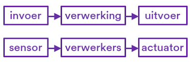

INVOER / VERWERKING / UITVOER
INVOER / VERWERKING / UITVOER
INVOER
De invoer is de gegevens en informatie die een computer of systeem binnen krijgt door middel van een actie. Een voorbeeld hiervan is als jij op een toetsbord een letter indrukt, dan is de ingedrukte letter de invoer.
VERWERKING
Verwerking is de verwerking van de gegevens en informatie die binnen is gekregen van de verwerking. Bij verwerking zet een systeem ruwe informatie om in nuttige informatie. Voorbeelden hiervan zijn: een rekenmachine die berekent wat 2 + 2 is, tekst omzetten en resulataten opslaan.
UITVOER
Bij de uitvoer wordt alle verwerkte informatie uitgevoert door een visueel, auditief of door een actie in de echte wereld. Een voorbeeld hiervan is bijvoorbeeld dat een rekenmachine de berekening laat zien op het scherm, dit is dan een visuele uitvoer.
Klik hier voor een filmpje voor meer uitleg! 